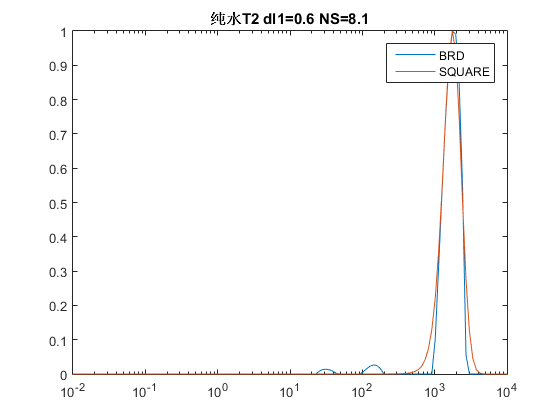

2015-07-02
本月课题内容
- SQUARE原理 原始问题
- 对比实验
- 总结与评价

转换为
一、二阶导数

SQUARE得到的结果比BRD更为平滑，前者正则化程度更高
二者均需要使用L曲线进行正则化因子选择
BRD法产生的杂峰来自数据压缩部分
下阶段工作计划
- SQUARE二维化
- 成果整理
Support or Contact
Find something interesting? Contact me .
SQUARE得到的结果比BRD更为平滑，前者正则化程度更高
二者均需要使用L曲线进行正则化因子选择
BRD法产生的杂峰来自数据压缩部分
Find something interesting? Contact me .